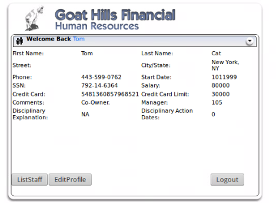
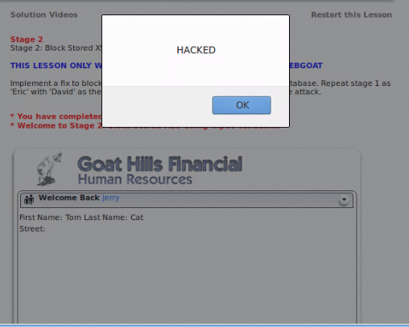
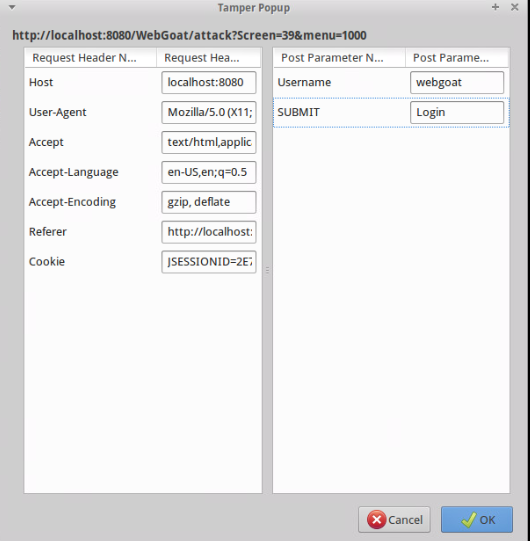
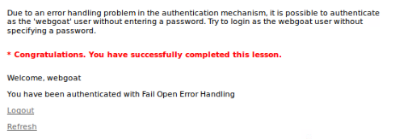
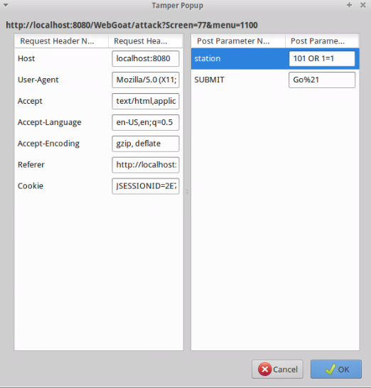
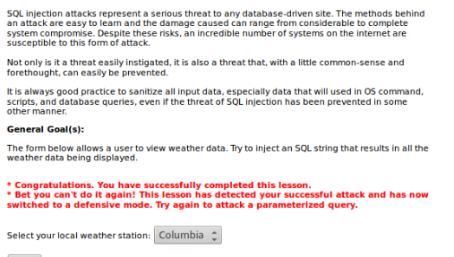

Week 7: Web - Security Tools Techniques
Name: Kevin Guan
The main subject of the seventh week is security tools and techniques. One of the topics that were discussed was user-level attacks. As mentioned in the lecture, the user is usually the weakest link that leads to an attack. Some of the most common user traits that exploiters abuse are impatience, laziness, self-proclaimed omniscience, and clickaholics. Through social engineering, abusers are able to profit off exploits like phishing, malvertising, or social media link insertion. These exploits are often easy to avoid if the user pays attention to the site that they visit; however, there will be the small percent of the population who are not very literate on the web or follows the allurement of the social engineering that end up becoming victims to these scams. Anyhow, users are not helpless. Developers have implemented defenses that allow users to less likely become prey for these malicious exploiters. Some of the more common methods include site certification services, domain reputation systems, client and gateway AV/AM, safe url shorteners, and content provider education. Nonetheless, the best way to prevent these types of exploits is end user education and learning about the different forms of abuse that are on the web nowadays.
While user-level attacks are common, the blame can also be due to vulnerabilities inside the user's browsers. It is possible for a browser to download and execute malicious content on the web without any awareness that the content was malicious such as shellcodes that can execute through the browser's script engine. Another common form of attack that is not blamed on the user is the man-in-the-middle attack. This form of attack takes advantage of a victim's web traffic and allows the exploiter to be able to snoop on all of the user's incoming and outgoing traffic. The exploiter even have the ability to rewrite the content within the traffic at both the proxy-level and packet-level.
Eventually, we utilize the WebGoat to explore some of the exploits that hackers may use when attacking a site. In the first lab that involved attacking the WebGoat, we utilized Firefox 35 that was integrated with a Tamper Data plugin that hangs up all GET and POST operations. In the meanwhile, the users have the liberty to manipulate certain fields inside the hanged operations before allowing the process to continue afterwards. For the first attack, the attack consisted of executing a stored cross site scripting (XSS) onto the goat. The process started with logging into the user interface as Tom. After the login was successful, we accessed Tom's user profile and inserted an alert script into the street field.

Next, Tom's account was logged off before logging into Jerry's account. When accessing Jerry's profile, the alert message that was implemented within Tom's street field appeared.

For the second attack, the main target involved the abusing of an improper error handling. For this case, there were issues with the query parameters where the password can be bypassed via the creation of an error in the backend. With the usage of the Tamper Data tool, we were able to bypass the password requirement when the password element was deleted from the post parameter list.


For the third attack, we would be exploiting the flaws within the SQL of the page in order to make the page return all rows from its table. One of the methods involved changing up the POST parameters via the Tamper plugin. For this case, the station parameter was changed to 101 OR 1=1 in order to lead to the new, tampered results. Another method that can achieve similar results would be adding "&station = 102 OR 1=1" to the URL.


Wrap-Up Discussion
1. An example would be a scenario where people's personal information that are stored within the web application are leaked and abused by many others. Another instance would be where the hacker can inject malicious pieces of code into the site that would create instability throughout the entirety of the site.
2. End-users can be wary of the sites that they use and visit. If the website looks poorly designed and unpolished, it would be a good idea for users to avoid the site and find an alternative.
3. Web application developers need to learn about the different methods that hackers can use to abuse websites. With proper awareness of these threats, they can develop code that will not fall into the criteria that attackers sought for when attacking sites.
4. Important skills for web application developers need would be the ability to properly wireframe the web application and implement the required HTML and CSS that will run the application securely and smoothly.
5. An appropriate method to continue with WebGoat is to use it as a platform for becoming more aware of the mechanics behind some of the most common forms of web attacks. By becoming educated on the subject, the process in developing secure websites and applications improves where the developer will be less likely to create code that will fall into the same pitfalls that the applications on the WebGoat fell into.